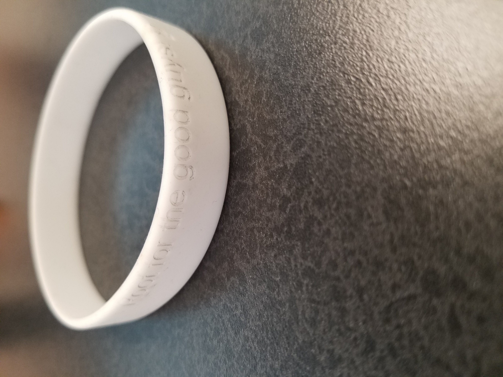

Making A Cardboard Box with Designs on It
I went to the website called MakerCase and decided that I wanted to make a cube with finger joints.
I got the file, opened it on CorelDraw in order to vector and rastor on it.
To vector, I put some text on the box and made it hairlined.
To rastor, I created a bitmap of an image I wanted to make.
Then I went to the laser cutter, focused it and watched it as it cut out my box.
You can see the assembled box on the bottom.

Making a Pressfit Kit
I thought about it a bit and realized that I just needed to make rectangular holes around shapes the same size.
So I did that on CorelDraw and made it hairline so that the laser cutter would cut the pieces out.
You can see how it fits together nicely.

Wrist Band Design
So, I used CorelDraw again, using a canvas the same size as the band.
I put the text on it and did not hairline so that it would rastor.
The text turned out a bit higher than I expected, but it was still pretty good.

Making an Object that can't Be Made Subtractively
I thought about it a bit and made an object that can't be made subtractively.
It is a hollow sphere with a hole in it that is within a cube that has open circular faces.
It acts kind of like a fidget cube.

File Download
My Pressfit Kit File (.cdr)
Pedestal File (.stl)
Final File (.stl)